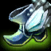

Informationen über Fiora
Fiora "die große Duellantin"

Fiora ist ein Starker, aber schwer zu erlernender Champion. Ihr "early game" ist sehr stark, wobei man sagen muss, dass Fiora nicht wirklich einen Punkt hat, an dem sie an Stärke verliert wie zum Beispiel andere Champion wie yasuo , der es im "early game" sehr schwer hat. Am liebsten hat Fiora weiche Ziele vor sich die sie schon mit zwei bis drei Hieben auseinander nehmen kann, aber auch Tanks machen ihr keine Probleme, da sie mit Ihrer passiven fähigkeit "true dmg" anrichtet. Ebenfalls kann sie mit ihrer Fähigkeit "Riposte" jeklichenschaden blockieren und nach kurzer zeit einen hieb zurück geben der magischen schaden verusacht und auch ihre passive "triggert", dabei muss man beachten, dass wenn sie von cc getroffen wird dieser hieb den erst getroffenen gegner "stund".
Vorallem im späteren Verlauf des Spiels wird Fiora ein monster, weil sie nicht nur eine split-push königen ist sondern auch noch einen massiven schaden austeilen kann und ebenfalls, wenn im richtig eingesetzte, durch ihre "W" nicht mehr zu töten ist. Ihr ultimative fähigkeit gibt ihr und ihrem team leben im teamfight sofährn sie es schaft einen gegner zu töten.
Fiora ist sehr mobile dashalb sollte man versuchen sie zu stunen oder festzuhalten natürlich nur wenn sie ihre "W" fähigkeit raus hat. nutürlich sollte man sich so positionieren das sie nicht ihr passive auslösen kann.
Was macht Fiora so Stark?
Ihre Mobiletät und ihre passive geben ihr einen großen vorteil im "1v1" und ihr "snowball" potenzial ist sehr groß, außerdem kann sie super spliz-pushen was ihrem team einen vorteil im einnehmen von objecten gibt.Wichtige Items auf Fiora
-
 The Black Cleaver
The Black Cleaver - Ravenous Hydra
- Boots of Swiftness
- Spirit Visage
-
 Sterak's Gage
Sterak's Gage -
 The Bloodthirster
The Bloodthirster